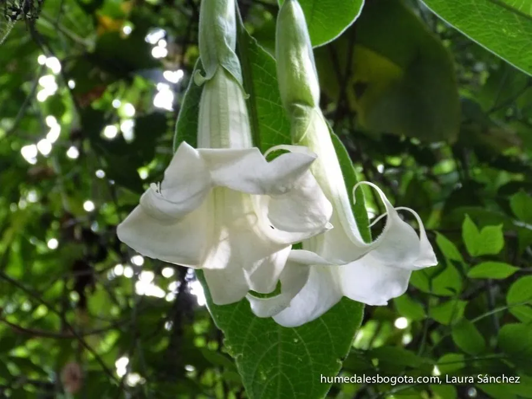

灌木与花木 · 植物界
木本曼陀罗 Brugmansia arborea

茄科曼陀罗属常绿灌木或小乔木，花白色、下垂如喇叭，全株含托品烷类生物碱，观赏价值高但毒性极强。
- 分类
- 门被子植物门纲木兰纲目茄目科茄科属曼陀罗属
- 栖息环境
- 热带与亚热带高原，喜温暖湿润、阳光充足，不耐寒
- 地理分布
- 原产南美安第斯山区；中国华南、西南及世界各地热带地区引种栽培
- 保护级别
- IUCN 暂无评估；栽培广泛，野生种群状况不明
物种志
木本曼陀罗为常绿灌木或小乔木，高 2–4 米，茎干粗壮、多分枝，幼枝被短柔毛。叶片卵形至宽卵形，长 15–30 厘米，边缘全缘或波状，揉碎有特殊气味。花单生于叶腋、下垂，花冠喇叭状，白色，长 15–20 厘米，夜间香气最浓；果实纺锤形，表面光滑，成熟后开裂。
本种原产南美洲安第斯山区，喜温暖湿润、阳光充足的环境，在中国南方常作庭园观赏植物栽培。它的花大而优雅，英文称“天使喇叭”，但全株含有东莨菪碱、莨菪碱等托品烷类生物碱，花、叶、果实与种子均有剧毒，误食可引起口干、心悸、幻觉、抽搐甚至死亡，汁液接触眼睛也会造成伤害。它仅供专业栽培观赏，不可自行采食或药用，家庭种植需远离儿童与宠物。
形态与习性
- 株高2–4 米，茎干粗壮、多分枝
- 花期4–10 月，花白色、下垂
- 果期秋季，果实纺锤形、表面光滑
- 光照喜光，也可耐半阴
- 水分喜湿润，生长期需充足浇水
- 土壤肥沃、排水良好的微酸性壤土
- 毒性全株含托品烷类生物碱，误食可致命
趣味知识
- 木本曼陀罗的英文名 Angel's Trumpet 意为“天使的喇叭”，形容它下垂的大花。
- 它的花在夜间香气最浓，主要靠夜行性蛾类传粉。
- 全株含东莨菪碱等生物碱，在医疗上可提取用于抗晕动病，但自行使用极其危险。
- 它与草本曼陀罗同属茄科，但为木本，花向下垂，二者毒性都很强。